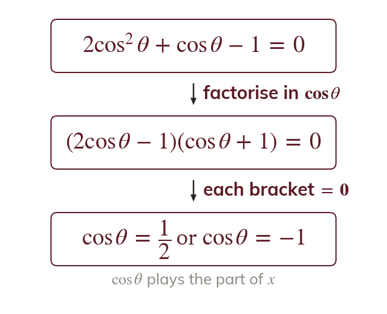
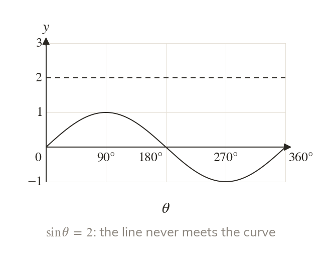
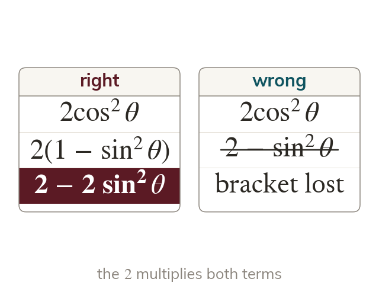
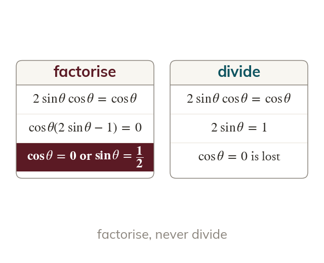

A quadratic in disguise
An equation such as is a quadratic in which plays the part of x. It factorises as a quadratic, and each bracket gives a simple equation.
Exam trigonometric equations are often quadratics in disguise, or need an identity first so that only one function is left. This lesson joins factorising, the identities and the interval methods of the chapter into the exam's 'show that ..., hence solve' question.
Work down the page at your own pace. Write every answer in your book first, then click to check it.
Read each card, then follow the worked examples one step at a time.

An equation such as is a quadratic in which plays the part of x. It factorises as a quadratic, and each bracket gives a simple equation.

The values of and always lie between and so a value outside that range gives no solutions. Reject that bracket and solve the others.
Pick an answer. If it's wrong, the feedback tells you which mistake it was.
Read each card, then follow the worked examples one step at a time.

An equation in both and will not factorise until one of them is replaced. Replace with or with and keep the bracket.

Dividing by or loses every solution where it is zero. Factorise it out instead.
Pick an answer. If it's wrong, the feedback tells you which mistake it was.
Finished? Next lesson: 11.1 Vectors and Representing Vectors.
For each skill, tap the one that is true for you today. Your Revise pages start with anything you mark Not yet.
Your ratings are saved on this device only.
Log in, then search for a code to practise that skill.